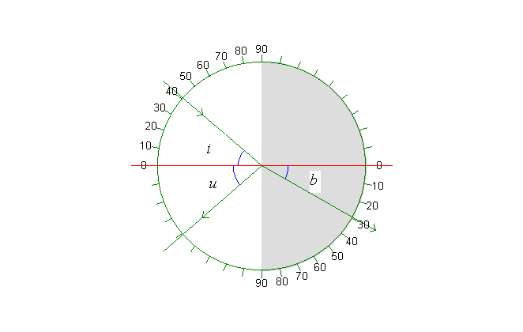

En lysstråle brydes, når den går fra luft til vand. Billedet skal forestille et halvcirkelformet kar med vand set fra oven. Indfaldsloddet er vist med rødt. Indfaldsvinklen i varieres i programmet med scrollbaren i panelet til venstre. Herved ændres naturligvis også udfaldsvinklen u og brydningsvinklen b. Variationen kan ses i tabellen.
Tabel:
Brydning i vand |
|
| Brydningsindeks, n | 1,334 |
| Bølgelængde/nm, grøn | 546,1 |
| Indfaldsvinkel i/° | 41,0 |
| Brydningsvinkel b/° | 29,5 |
Memo:
Brydning:
Den store scrollbar til venstre ændrer indfaldsvinkel, i (og dermed brydningsvinkel, b).
Trackbaren øverst til venstre skrifter strålens retning.
Klik på knappen »Måler, F6« øverst på skærmen. (eller du kan trykke på »F6«), så fremkommer en vinkelmåler.
Klik også på »Mærker« og »Lod«. Lav en udskrift og skriv indfaldsvinkel i og brydningsvinkel b på udskriften.
Lav Øvelse 1 og 2
Ovenstående er vist graf, tabel og memo. Der er en beskrivelse i memoen til samtlige simulationer, og der er er en tabel til de fleste.
Mål sammenhørende værdier af indfaldsvinkel, i og brydningsvinkel, b og tegn en graf for sin(i) som funktion af sin(b). Bestem vha. grafen brydningsindekset for vand. Bemærk, at data aflæses i tabellen. Hvis ikke tabellen er synlig, så klikker du i menuen øverst på Vis|Tabel (eller Ctrl T)
Hvad er størst i eller b, når strålen går fra luft til vand?
Hvad er størst i eller b, når strålen går fra vand til luft?
Bestem grænsevinklen.